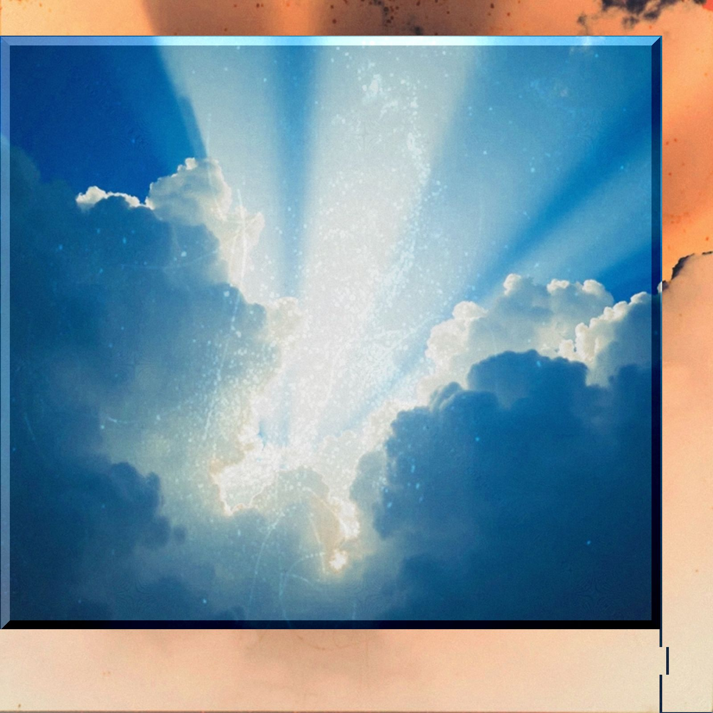

銀の裏地
lyrics
search and destroy
探しても見つからない
壊したいのに壊せない
状況的にアイロニー
ずっと探しているのに
壊れてしまってんのに
曲がり角で
ただ曲がるたび
出会ってしまうだけ
何を探していたのか
すっかり忘れてしまっていた
search and destroy
探しても見つからない
なくしたいのになくせない
二面性のアイロニー
ずっと探しているのに
もう壊れてもいいのに
目覚めて起きて
リスポーンするたび
出会ってしまうだけ
何を求めていた
すっかり忘れて どうでもよくなって
迷ってれば いつか
辿りつける
出会えなかったのは
探してたからだろう
それでもまた 手は探してる
それでもまた 目は探してる
出会ってれば きっと
別れは こない
壊せなかったのは
探したいからだろう
それでもまた キミ 探してる
それでもまだ キミ 探してる
notes
石原吉郎は、“詩は、「書くまい」とする衝動なのだ。”と書いた。
でも私は書きたいことすらなかった。つーかそもそも詩人じゃなかった。ただの労働者で納税者なのだ。カッコつけた言葉を垂れ流して「私は詩人です」なんて言えてたら良かったけどね。でも、詩人って首に綺麗なスカーフ巻いてる胡散くさい奴なんだって、ブコウスキーがそう書いてたよ。
でも、私は何一つ書くことがないわけではなかった。なんとなくひっかかていたのは、昨日のYoutubeのオススメに出てきた動画。イギーポップの“Search And Destroy”について語ってた。でも僕はその曲を知らなかった。だからサーチアンドデストロイって言葉だけ残った。
というわけで、「探す」「壊す」しか書けてない。それと出会ってしまったということ。しかも結局探しても何も見つけてない、壊せてない。何も。
そんな日もあるし、そんな日ばかりな気もする。
"Every cloud has a silver lining." （どの雲にも銀の裏地がある）
雲り空でも裏側には銀色に輝く兆しがあるということらしい。それじゃ、こっち側からじゃいくら探したって見つからない。探す場所と出会う場所は違うんだろう。
まあいいか。
DON'T TRY